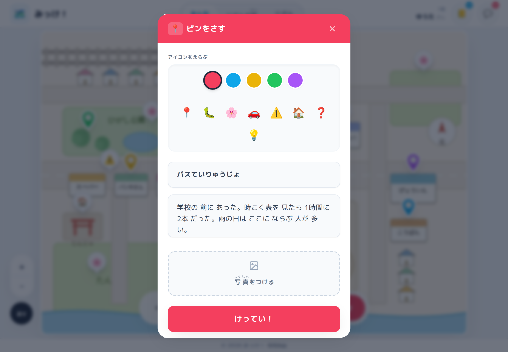
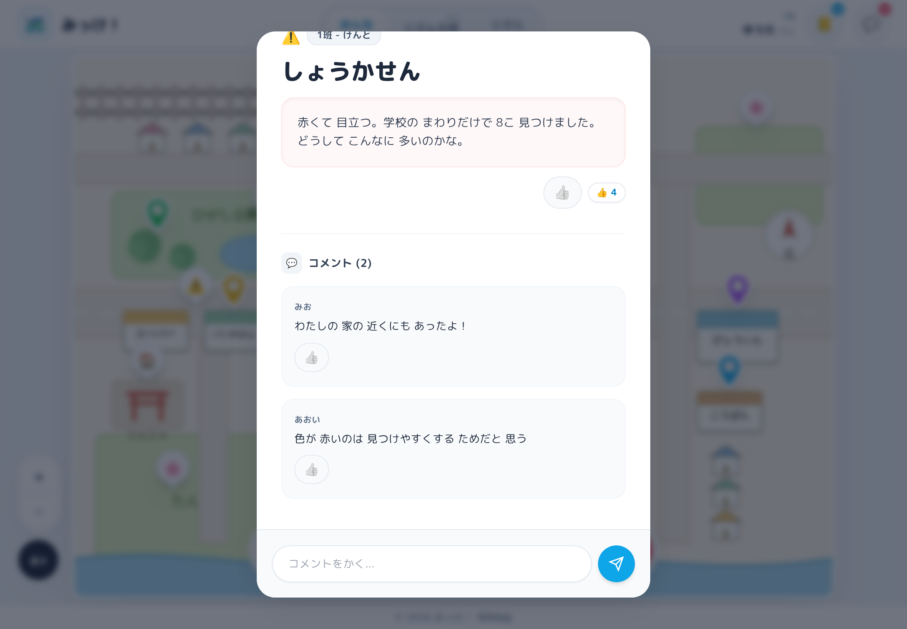
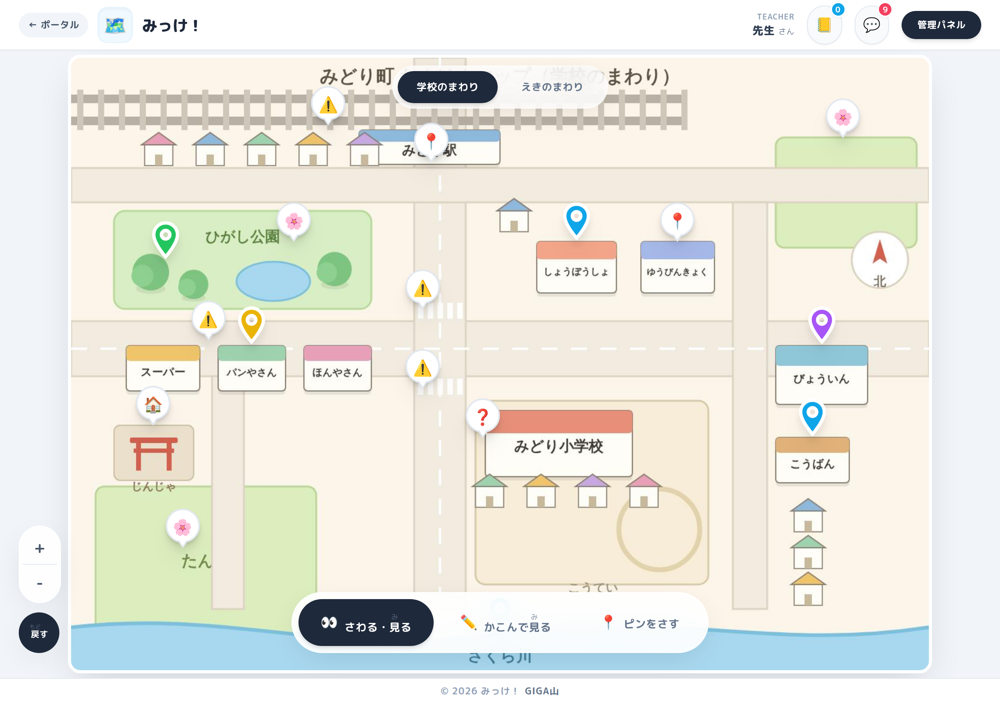

みっけ！
町たんけんで見つけたものを、写真とひとことメモをつけて地図にはり、 クラス全員でその地図を見せ合えるようにした無償のアプリです。小学校の教員が作りました。
このページからは、地図を開けません
このアプリは、先生おひとりずつが、ご自分の Google アカウントで公開して使う形です。 共通の入口はありません。
- 児童のみなさんは、先生から配られた URL を開いてください。このページではありません。
- 先生方は、下の「入れかた」の手順で、ご自分の学級の URL を作ってください。10 分ほどで終わります。
ピンも写真もメモも、公開した先生ご自身の Google ドライブにある表計算ファイル1つの中だけに入ります。 制作者を含め、ほかの誰のところにもデータは行きません。
どんなアプリか
町たんけんから帰ってくると、子どもたちはそれぞれ違うものを見つけています。 けれど発表の時間で聞けるのは数人ぶんで、残りの子が見つけたものは、 だれの目にも触れないまま終わってしまう。 集めるところと並べるところを画面にまかせれば、その時間は見合うほうに戻せます。



使うときの流れ
- 先生が「単元」を作り、地図の画像（校区の地図など）を1枚のせます。
- URL を配り、子どもたちが名前を入れて参加を申請します。先生が承認すると使えるようになります。
- 見つけたものの写真をとって、地図の上にピンを立てます。何個でも立てられます。
- 友だちのピンを見て、コメントやスタンプを返します。班や色でしぼって見ることもできます。
- 先生は、なぞって範囲を選ぶと、その中のピンだけをまとめて読めます。
入れかた
準備するものは Google アカウント1つ。ふだんお使いの学校のアカウントで構いません。 スプレッドシートをコピーして、公開の設定をするだけです。10分ほどで終わります。
- 上のボタンを押し、「コピーを作成」を選びます。ご自分のドライブにファイルができます。
- できたファイルを開き、上のメニューに「みっけ！」が出たら 「はじめの設定（先生として登録）」を1回押します。 押した方が、この学級の先生になります。
- 「拡張機能」＞「Apps Script」＞右上の「デプロイ」＞「新しいデプロイ」＞種類は「ウェブアプリ」。 次のユーザーとして実行＝「自分」、アクセスできるユーザー＝「同一ドメインの全員」にします。
- 表示された URL を児童に配れば準備完了です。
コードは、コピーしたファイルの中に入っています。 貼り付ける作業はありません。ピンも写真もそのファイルの中に入るので、 どこにできたのかを探す必要もありません。
児童がこのファイルを開ける必要はありません。読み書きはすべて先生の権限で行われるので、 児童にはスプレッドシートの共有をしないでください。
コピーできないときは、貼り付けでも入ります。 学校のポリシーで、外部のファイルのコピーが禁じられていることがあります。 その場合は、README の「入れかた」 にある貼り付けの手順をご覧ください。入るものは同じです。
「アクセスできるユーザー」は「同一ドメインの全員」にしてください。 このアプリは、開いている本人が誰かを Google アカウントで確かめて、 「先生の名簿に載っている子」だけを通します。 「全員（匿名ユーザーを含む）」にすると本人が分からなくなり、 先生ご自身も含めて誰も入れません（そう表示されます）。
情報担当の先生へ
| 項目 | このアプリの場合 |
|---|---|
| フィルタリングで通すもの | アプリ本体が置かれる script.google.com と
googleusercontent.com。画面の部品に unpkg.com と
cdn.tailwindcss.com を読みます（このページ自体はアプリではありません）。 |
| データの置き場所 | 公開した先生ご自身の Google ドライブにある表計算ファイル1つだけ。 写真もそのファイルの中に入ります（Google ドライブの別ファイルは作りません）。 制作者もデータを見られません。 |
| アプリが求める権限 | スプレッドシートの読み書き・外部への通信・メールアドレスの確認の3つだけ。 ドライブ全体を読む権限は求めません。 承認するのは公開する先生おひとりで、児童には同意画面が出ません。 |
| 児童が入れる情報 | 表示名（ニックネームや出席番号でも可）と、写真・メモ。 児童どうしの画面では、ほかの子のメールアドレスは出ません。 |
| 先生用の操作 | 参加の承認・単元の管理・他の子の記録の削除は、 公開した先生（と先生が名簿で先生にした人）だけ。 画面のボタンを隠すのではなく、サーバー側で確かめています。 |
| AI（Gemini） | 先生が API キーを入れたときだけ動きます。 送る文からは名前を仮名に、連絡先を伏せ字にしてから送ります。 児童の画面から AI は呼べません。 |
| 費用・アカウント登録 | どちらもありません。MIT ライセンスで公開しています。 |
シートを点検する
コピーしたスプレッドシートを開くと、上のメニューに「みっけ！」が出ます。 「シートを点検する」を押すと、中の作りがアプリの想定どおりかを確かめられます。
列は見出しの名前で読み書きしているので、 列を足したり並べ替えたりしても動きます（先生用のメモ欄を足していただいて構いません）。 困るのは見出しの行ごと消えたときだけで、そのときは点検が「どこがどうなっているか」を出します。 「シートを直す（足すだけ）」は足りないシートと列を足すだけで、 消したり動かしたりはしません。
できないこと
正直に書いておきます。オフラインでは使えません（地図もピンもサーバーから取ります）。 画面は10〜15秒ごとに読み直す形なので、友だちのピンが出るまで少し間があります。 写真は表計算ファイルの中に文字として入れているため、1枚あたりの大きさに上限があり、 枚数が増えるとファイルが重くなります。 学級をまたいで見せ合う機能はありません（1つの公開＝1つの学級です）。